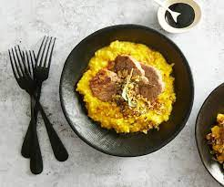

Risotto Milanese

Description
lasagna is a famous italian dish made of rice and white wine, etc
Ingredients
- onion and garlic
- olive oil
- risotto rice
- saffron
- white wine
- bouillon de légumes
- parmesan râpé
- sel, poivre
Steps
- peler, hâcher et faire revenir ail et oignon
- ajouter le riz et le safran, nacrer
- verser et faire réduire complètement le vin
- verser le bouillon peu à peu
- laisser mijoter 20 minutes
- incorporer le parmesan, assaisonner
Back to the homepage